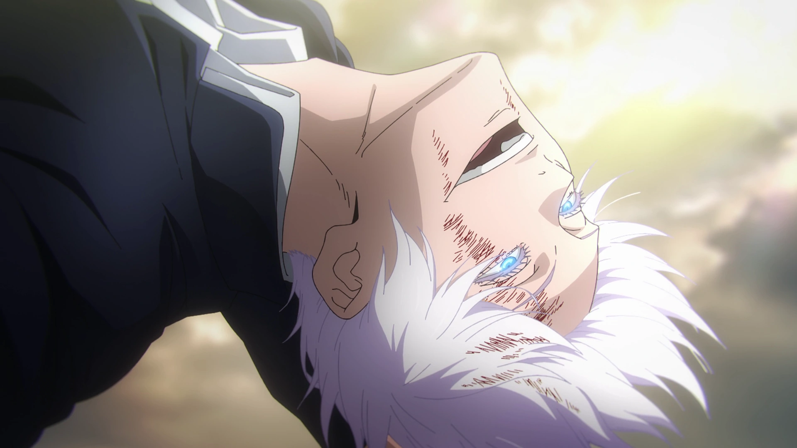

Gojo Satoru is Not Just Strong — He’s the Blueprint
Gojo Satoru isn’t just the strongest in Jujutsu Kaisen — he’s a walking paradigm shift, a character
who redefines what it means to be powerful in anime.
From the moment he steps onto the screen with those blindfolded eyes and that smug smirk, you know:
this man is not someone you beat. He’s someone you survive, if you're lucky.